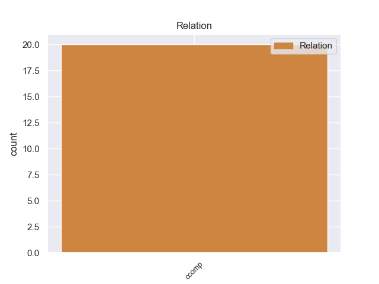
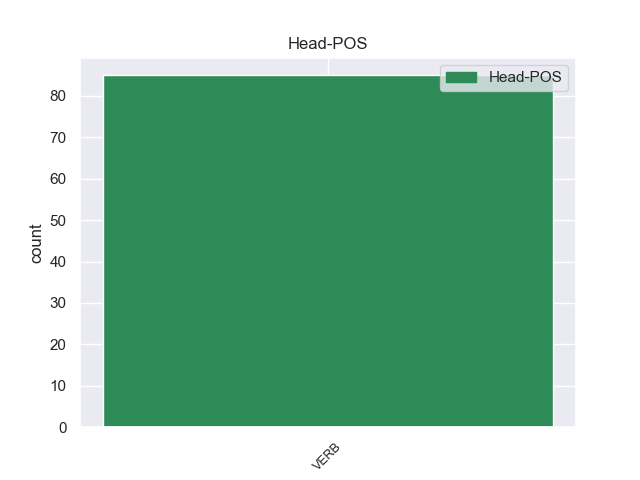
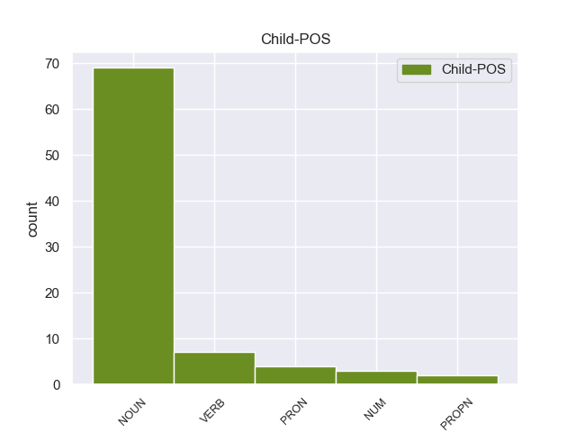

Distribution of features within this leaf



non-conforming Examples:
1 Ο _ _ _ _ 0 _ _ _
2 Αχέροντας _ _ _ _ 0 _ _ _
3 διασχίζοντας _ _ _ _ 0 _ _ _
4 την _ _ _ _ 0 _ _ _
5 κοιλάδα _ _ _ _ 0 _ _ _
6 που _ _ _ _ 0 _ _ _
7 σχηματίζεται _ _ _ _ 0 _ _ _
8 ανάμεσα _ _ _ _ 0 _ _ _
9 σ _ _ _ _ 0 _ _ _
10 τους _ _ _ _ 0 _ _ _
11 ορεινούς _ _ _ _ 0 _ _ _
12 όγκους _ _ _ _ 0 _ _ _
13 της _ _ _ _ 0 _ _ _
14 Δυτικής _ _ _ _ 0 _ _ _
15 Ηπείρου _ _ _ _ 0 _ _ _
16 διέρχεται _ _ _ _ 0 _ _ _
17 από _ _ _ _ 0 _ _ _
18 ένα _ _ _ _ 0 _ _ _
19 στενό _ _ _ _ 0 _ _ _
20 φαράγγι _ _ _ _ 0 _ _ _
21 μεταξύ _ _ _ _ 0 _ _ _
22 των _ _ _ _ 0 _ _ _
23 βουνών _ _ _ _ 0 _ _ _
24 Παραμυθίας _ _ _ _ 0 _ _ _
25 και _ _ _ _ 0 _ _ _
26 Σουλίου _ _ _ _ 0 _ _ _
27 , _ _ _ _ 0 _ _ _
28 το _ _ _ _ 0 _ _ _
29 οποίο _ _ _ _ 0 _ _ _
30 ονομάζεται ονομάζω VERB VERB Aspect=Imp|Mood=Ind|Number=Sing|Person=3|Tense=Pres|VerbForm=Fin|Voice=Pass 0 _ _ _
31 " _ _ _ _ 0 _ _ _
32 Στενά στενά NOUN NOUN Case=Nom|Gender=Neut|Number=Plur 30 xcomp _ _
33 του _ _ _ _ 0 _ _ _
34 Αχέροντα _ _ _ _ 0 _ _ _
35 " _ _ _ _ 0 _ _ _
36 . _ _ _ _ 0 _ _ _
1 Πηγές _ _ _ _ 0 _ _ _
2 της _ _ _ _ 0 _ _ _
3 Αντιπολίτευσης _ _ _ _ 0 _ _ _
4 αναφέρουν _ _ _ _ 0 _ _ _
5 ότι _ _ _ _ 0 _ _ _
6 « _ _ _ _ 0 _ _ _
7 οι _ _ _ _ 0 _ _ _
8 κυβερνητικές _ _ _ _ 0 _ _ _
9 δυνάμεις _ _ _ _ 0 _ _ _
10 προσπαθούν _ _ _ _ 0 _ _ _
11 να _ _ _ _ 0 _ _ _
12 αποτρέψουν _ _ _ _ 0 _ _ _
13 τις _ _ _ _ 0 _ _ _
14 ομάδες _ _ _ _ 0 _ _ _
15 του _ _ _ _ 0 _ _ _
16 Ερυθρού _ _ _ _ 0 _ _ _
17 Σταυρού _ _ _ _ 0 _ _ _
18 να _ _ _ _ 0 _ _ _
19 γίνουν γίνομαι VERB VERB Aspect=Perf|Mood=Ind|Number=Plur|Person=3|VerbForm=Fin|Voice=Pass 0 _ _ _
20 μάρτυρες μάρτυρας NOUN NOUN Case=Nom|Gender=Masc|Number=Plur 19 xcomp _ _
21 της _ _ _ _ 0 _ _ _
22 σφαγής _ _ _ _ 0 _ _ _
23 που _ _ _ _ 0 _ _ _
24 συντελείται _ _ _ _ 0 _ _ _
25 από _ _ _ _ 0 _ _ _
26 τους _ _ _ _ 0 _ _ _
27 σύρους _ _ _ _ 0 _ _ _
28 στρατιώτες _ _ _ _ 0 _ _ _
29 που _ _ _ _ 0 _ _ _
30 καταδιώκουν _ _ _ _ 0 _ _ _
31 και _ _ _ _ 0 _ _ _
32 εκτελούν _ _ _ _ 0 _ _ _
33 τους _ _ _ _ 0 _ _ _
34 εναπομείναντες _ _ _ _ 0 _ _ _
35 αντάρτες _ _ _ _ 0 _ _ _
36 » _ _ _ _ 0 _ _ _
37 . _ _ _ _ 0 _ _ _
1 Οι _ _ _ _ 0 _ _ _
2 μισοί _ _ _ _ 0 _ _ _
3 Γάλλοι _ _ _ _ 0 _ _ _
4 θεωρούν θεωρώ VERB VERB Aspect=Imp|Mood=Ind|Number=Plur|Person=3|Tense=Pres|VerbForm=Fin|Voice=Act 0 _ _ _
5 αυξημένη αυξημένος VERB VERB Aspect=Perf|Case=Acc|Gender=Fem|Number=Sing|VerbForm=Part|Voice=Pass 4 xcomp _ _
6 την _ _ _ _ 0 _ _ _
7 τρομοκρατική _ _ _ _ 0 _ _ _
8 απειλή _ _ _ _ 0 _ _ _
1 Η _ _ _ _ 0 _ _ _
2 έρευνα _ _ _ _ 0 _ _ _
3 της _ _ _ _ 0 _ _ _
4 Ifop _ _ _ _ 0 _ _ _
5 έδειξε _ _ _ _ 0 _ _ _
6 ότι _ _ _ _ 0 _ _ _
7 « _ _ _ _ 0 _ _ _
8 το _ _ _ _ 0 _ _ _
9 μεγαλύτερο _ _ _ _ 0 _ _ _
10 μέρος _ _ _ _ 0 _ _ _
11 των _ _ _ _ 0 _ _ _
12 ηλικιωμένων _ _ _ _ 0 _ _ _
13 θεωρεί θεωρώ VERB VERB Aspect=Imp|Mood=Ind|Number=Sing|Person=3|Tense=Pres|VerbForm=Fin|Voice=Act 0 _ _ _
14 αυξημένη αυξημένος VERB VERB Aspect=Perf|Case=Acc|Gender=Fem|Number=Sing|VerbForm=Part|Voice=Pass 13 xcomp _ _
15 την _ _ _ _ 0 _ _ _
16 τρομοκρατική _ _ _ _ 0 _ _ _
17 απειλή _ _ _ _ 0 _ _ _
18 , _ _ _ _ 0 _ _ _
19 ενώ _ _ _ _ 0 _ _ _
20 μονάχα _ _ _ _ 0 _ _ _
21 το _ _ _ _ 0 _ _ _
22 5% _ _ _ _ 0 _ _ _
23 των _ _ _ _ 0 _ _ _
24 ατόμων _ _ _ _ 0 _ _ _
25 ηλικίας _ _ _ _ 0 _ _ _
26 18-24 _ _ _ _ 0 _ _ _
27 ετών _ _ _ _ 0 _ _ _
28 συμφωνεί _ _ _ _ 0 _ _ _
29 μ' _ _ _ _ 0 _ _ _
30 αυτή _ _ _ _ 0 _ _ _
31 την _ _ _ _ 0 _ _ _
32 άποψη _ _ _ _ 0 _ _ _
33 . _ _ _ _ 0 _ _ _
1 Κυρία _ _ _ _ 0 _ _ _
2 Πρόεδρε _ _ _ _ 0 _ _ _
3 , _ _ _ _ 0 _ _ _
4 καλωσορίζουμε _ _ _ _ 0 _ _ _
5 αυτή _ _ _ _ 0 _ _ _
6 την _ _ _ _ 0 _ _ _
7 πρωτοβουλία _ _ _ _ 0 _ _ _
8 ως _ _ _ _ 0 _ _ _
9 ένα _ _ _ _ 0 _ _ _
10 ακόμα _ _ _ _ 0 _ _ _
11 μικρό _ _ _ _ 0 _ _ _
12 βήμα _ _ _ _ 0 _ _ _
13 σ _ _ _ _ 0 _ _ _
14 την _ _ _ _ 0 _ _ _
15 πορεία _ _ _ _ 0 _ _ _
16 προς _ _ _ _ 0 _ _ _
17 την _ _ _ _ 0 _ _ _
18 εκπλήρωση _ _ _ _ 0 _ _ _
19 της _ _ _ _ 0 _ _ _
20 εντολής _ _ _ _ 0 _ _ _
21 που _ _ _ _ 0 _ _ _
22 λάβαμε _ _ _ _ 0 _ _ _
23 σ _ _ _ _ 0 _ _ _
24 τη _ _ _ _ 0 _ _ _
25 Σύνοδο _ _ _ _ 0 _ _ _
26 του _ _ _ _ 0 _ _ _
27 Τάμπερε _ _ _ _ 0 _ _ _
28 να _ _ _ _ 0 _ _ _
29 καταστήσουμε καθιστώ VERB VERB Aspect=Perf|Mood=Ind|Number=Plur|Person=1|VerbForm=Fin|Voice=Act 0 _ _ _
30 την _ _ _ _ 0 _ _ _
31 αρχή _ _ _ _ 0 _ _ _
32 της _ _ _ _ 0 _ _ _
33 αμοιβαίας _ _ _ _ 0 _ _ _
34 αναγνώρισης _ _ _ _ 0 _ _ _
35 ακρογωνιαίο _ _ _ _ 0 _ _ _
36 λίθο λίθος NOUN NOUN Case=Acc|Gender=Masc|Number=Sing 29 xcomp _ _
37 της _ _ _ _ 0 _ _ _
38 δικαστικής _ _ _ _ 0 _ _ _
39 συνεργασίας _ _ _ _ 0 _ _ _
40 . _ _ _ _ 0 _ _ _